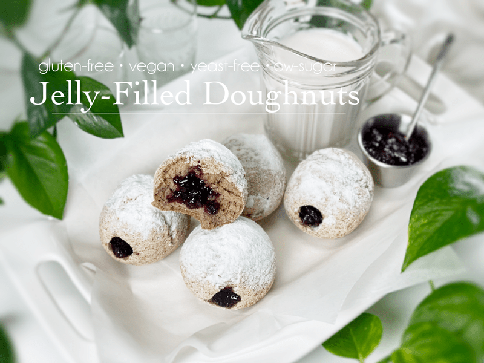

<!doctype html><html lang="en"><meta charset="utf-8"><meta name="viewport" content="width=device-width,initial-scale=1"><title>! Recipes to MAKE Archives</title><link rel="stylesheet" href="../reader.css"><header><a href="../START_HERE.html">← Каталог и поиск</a> · <a href="https://nouveauraw.com/recipes-to-make/">Оригинал</a> · Личная копия, 10.09.2026 · © Amie Sue</header><main><div id="post-226399" class="post-226399 post type-post status-publish format-standard hentry category-recipes-to-make" data-source-url="https://nouveauraw.com/recipes-to-make/">

  

<div class="grid_1">

	<div class="image-wrap fader">
    <span class="category"><a href="recipes-to-make-adding-asins-26c5d4f08d.html"> </a> </span> 
        <!-- removed title overlay -->
	<a href="recipes-to-make-adding-asins-26c5d4f08d.html" title="go to Protected: Adding ASINs"><span></span></a>
	</div>
         <!-- title below thumbnail -->
<div class="nr_title"><a href="recipes-to-make-adding-asins-26c5d4f08d.html" title="go to Protected: Adding ASINs">Protected: Adding ASINs</a></div>

		
	
</div><!-- .grid -->


  

<div class="grid_1">

	<div class="image-wrap fader">
    <span class="category"><a href="recipes-to-make-donate-test-2843c945c6.html"> </a> </span> 
        <!-- removed title overlay -->
	<a href="recipes-to-make-donate-test-2843c945c6.html" title="go to Donate Test"><span></span></a>
	</div>
         <!-- title below thumbnail -->
<div class="nr_title"><a href="recipes-to-make-donate-test-2843c945c6.html" title="go to Donate Test">Donate Test</a></div>

		
	
</div><!-- .grid -->


  

<div class="grid_1">

	<div class="image-wrap fader last">
    <span class="category"><a href="recipes-to-make-faq-plus-vs-printfriendly-5350d9e797.html"> </a> </span> 
        <!-- removed title overlay -->
	<a href="recipes-to-make-faq-plus-vs-printfriendly-5350d9e797.html" title="go to FAQ Plus vs. PrintFriendly"><span></span></a>
	</div>
         <!-- title below thumbnail -->
<div class="nr_title"><a href="recipes-to-make-faq-plus-vs-printfriendly-5350d9e797.html" title="go to FAQ Plus vs. PrintFriendly">FAQ Plus vs. PrintFriendly</a></div>

		
	
</div><!-- .grid -->


  

<div class="grid_1">

	<div class="image-wrap fader">
    <span class="category"><a href="recipes-to-make-my-commercial-kitchen-ed73c461ec.html"> </a> </span> 
        <!-- removed title overlay -->
	<a href="recipes-to-make-my-commercial-kitchen-ed73c461ec.html" title="go to My Commercial Kitchen"><span></span></a>
	</div>
         <!-- title below thumbnail -->
<div class="nr_title"><a href="recipes-to-make-my-commercial-kitchen-ed73c461ec.html" title="go to My Commercial Kitchen">My Commercial Kitchen</a></div>

		
	
</div><!-- .grid -->


	<div class="nav-interior clearfix">
			<div class="prev"></div>
			<div class="next"></div>
	</div>

	
</div></main></html>